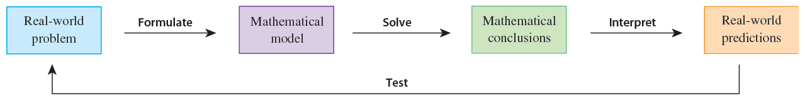

16 Differential equations
16.1 General differential equations
Reference: Stewart (2016)
In general, a differential equation is an equation that contains an unknown function and one or more of its derivatives. The order of a differential equation is the order of the highest derivative that occurs in the equation.
16.2 Example of a differential equation: Population growth
Reference: Stewart (2016)
The rate of growth of the population is the derivative \(\mathrm{d} P / \mathrm{d} t\), where \(t = \text{time}\) (the independent variable) and \(P = \text{the number of individuals in the population}\) (the dependent variable). So our assumption that the rate of growth of the population is proportional to the population size is written as the equation
\[ \cfrac{\mathrm{d} P}{\mathrm{d} t} = kP \]
where \(k\) is the proportionality constant. The equation above is a possible model for population growth; it is a differential equation because it contains an unknown function \(P\) and its derivative \(\mathrm{d} P / \mathrm{d} t\).
16.3 Modeling with differential equations
Reference: Stewart (2016)
The mathematical model often takes the form of a differential equation. This is not surprising because in a real-world problem we often notice that changes occur and we want to predict future behavior on the basis of how current values change.

16.4 Ordinary differential equations (Malthus’ model)
Reference: Hase (2022)
Consider the Malthusian growth model,
\[ \cfrac{\mathrm{d}}{\mathrm{d} t} N(t) = \lambda N(t) \quad \lambda > 0 \tag{1} \]
where \(N(t)\) is the population at time \(t\) and the initial condition (initial population) is \(N(t = 0) = N_{0}\). In what follows, two possible resolutions will be presented.
16.4.1 First resolution
In order to solve \((1)\), consider, formally, that the equation can be cast as
\[ \cfrac{\mathrm{d} N}{\mathrm{d} t} = \lambda N \]
\[ \cfrac{\mathrm{d} N}{N} = \lambda \ \mathrm{d} t \]
\[ \cfrac{1}{N} \mathrm{d} N = \lambda \ \mathrm{d} t \]
\[ \int \cfrac{1}{N} \mathrm{d} N = \int \lambda \ \mathrm{d} t ,\quad \text{from which} \quad \ln N = \lambda t + c', \quad c'\in \mathbb{R} \]
In the equation above, two constants of integration are produced by the two integrals; the constant \(c'\) above is the combination of both into a single one for simplicity. From it follows that
\[ \ln N = \lambda t + c' \]
\[ e^{\ln N} = e^{\lambda t + c'} \]
\[ N = e^{\lambda t + c'}, \quad (a^{\log_{a} x} = x) \]
\[ N = e^{\lambda t} \cdot e^{c'}, \quad (a^{m} a^{n} = a^{m + n}) \]
\[ N(t) = c e^{\lambda t}, \quad (c = e^{c'}) \]
where \(c = e^{c'}\); this constant is determined by the initial condition \(N(0) = N_{0}\). For \(t = 0\), one has
\[ N_{0} = N(0) = c e^{\lambda \cdot 0}, \quad \text{from which} \quad c = N_{0} \]
hence,
\[ N(t) = N_{0} e^{\lambda t} \tag{2} \]
which is the solution of the problem.
16.4.2 Second resolution
In order to solve \((1)\), consider, formally, that the equation can be cast as
\[ \cfrac{1}{N} \ \mathrm{d} N = \lambda \ \mathrm{d} t \]
In this second resolution, one invokes the definite integrals; the integration runs from an initial configuration (\(t = 0\) and \(N(0) = N_{0}\)) up to an arbitrary “final” situation (\(t\) and \(N(t)\)):
| Variable | \(t\) | \(N\) |
|---|---|---|
| Initial value | \(0\) | \(N_{0}\) |
| Final value | \(t\) | \(N(t)\) |
Therefore, inserting the integration sign leads to
\[ \int^{N(t)}_{N_{0}} \cfrac{1}{N'} \ \mathrm{d} N' = \int^{t}_{0} \lambda \ \mathrm{d} t' \]
Note the relabeling \(t'\) and \(N'\) of the (dummy) variables of integration to avoid confusion with the integration limits. By evaluating the integrals of \((3)\), one achieves the solution \((2)\).
\[ \int^{N(t)}_{N_{0}} \cfrac{1}{N'} \ \mathrm{d} N' = \int^{t}_{0} \lambda \ \mathrm{d} t' \]
\[ \biggr [ \ln N' \biggr ]^{N(t)}_{N_{0}} = \biggr [ \lambda t \biggr ]^{t}_{0} \]
\[ \ln N(t) - \ln N_{0} = \lambda t - \lambda \cdot 0 \]
\[ \ln \left ( \cfrac{N(t)}{N_{0}} \right ) = \lambda t - \lambda \cdot 0, \quad \left( \log_{a} \left ( \cfrac{x}{y} \right ) = \log_{a} x - \log_{a} y \right ) \]
\[ e^{\ln \left ( \cfrac{N(t)}{N_{0}} \right )} = e^{\lambda t} \]
\[ \cfrac{N(t)}{N_{0}} = e^{\lambda t}, \quad \left ( a^{\log_{a} x} = x \right ) \]
\[ N(t) = N_{0} e^{\lambda t} \]
16.5 Ordinary differential equations (Malthus-Verhulst’s model)
Reference: Hase (2022)
Consider, now, the growth model of Malthus-Verhulst,
\[ \cfrac{\mathrm{d}}{\mathrm{d} t} N(t) = \lambda N(t) [C - N(t)] , \quad \lambda, C > 0 \tag{4} \]
where \(C\) (carrying capacity) is the maximum size of the population and the initial condition (population) is \(N(t = 0) = N_{0}\). In order to solve \((4)\), one may write the equation formally, as
\[ \cfrac{\mathrm{d} N}{\mathrm{d} t} = \lambda N [C - N] \]
\[ \lambda \ \mathrm{d} t = \cfrac{\mathrm{d} N}{N [C - N]} \]
From
\[ \cfrac{1}{N [C - N]} = \cfrac{A}{N} + \cfrac{B}{[C - N]} = \cfrac{A [C - N] + BN}{N [C - N]} = \cfrac{AC - AN + BN}{N [C - N]} = \cfrac{N(B - A) + AC}{N [C - N]} \]
One has,
\[ \begin{cases} 0 = B - A \\ 1 = AC \end{cases} \quad , \quad \text{from which} \quad \begin{cases} A = \cfrac{1}{C} \\ B = \cfrac{1}{C} \end{cases} \]
Hence,
\[ \cfrac{1}{N [C - N]} = \cfrac{A}{N} + \cfrac{B}{[C - N]} = \cfrac{1}{C} \div N + \cfrac{1}{C} \div [C - N] = \cfrac{1}{C} \cdot \cfrac{1}{N} + \cfrac{1}{C} \cdot \cfrac{1}{[C - N]} \]
Then,
\[ \cfrac{1}{N [C - N]} \ \mathrm{d} N = \left [ \cfrac{1}{C} \cdot \cfrac{1}{N} + \cfrac{1}{C} \cdot \cfrac{1}{[C - N]} \right ]\ \mathrm{d} N \]
\[ \cfrac{1}{N [C - N]} \ \mathrm{d} N = \cfrac{1}{C} \cdot \cfrac{\mathrm{d} N}{N} + \cfrac{1}{C} \cdot \cfrac{\mathrm{d} N}{[C - N]} \]
Going back to the original equation, we then have,
\[ \lambda \ \mathrm{d} t = \cfrac{1}{C} \cdot \cfrac{\mathrm{d} N}{N} + \cfrac{1}{C} \cdot \cfrac{\mathrm{d} N}{C - N} \]
In what follows, two possible resolutions will be presented.
16.5.1 First resolution
In order to solve \((4)\), consider, formally, that the equation can be cast as
\[ \lambda \ \mathrm{d} t = \cfrac{1}{C} \cdot \cfrac{\mathrm{d} N}{N} + \cfrac{1}{C} \cdot \cfrac{\mathrm{d} N}{C - N} \]
\[ \int \lambda \ \mathrm{d} t = \int \left [ \cfrac{1}{C} \cdot \cfrac{1}{N} + \cfrac{1}{C} \cdot \cfrac{1}{C - N} \right ] \ \mathrm{d} N \]
\[ \int \lambda \ \mathrm{d} t = \int \left [ \cfrac{1}{C} \cdot \cfrac{1}{N} \right ] \ \mathrm{d} N + \int \left [ \cfrac{1}{C} \cdot \cfrac{1}{C - N} \right ] \ \mathrm{d} N \]
\[ \int \lambda \ \mathrm{d} t = \cfrac{1}{C} \int \cfrac{1}{N} \ \mathrm{d} N + \cfrac{1}{C} \int \cfrac{1}{C - N} \ \mathrm{d} N \]
Where,
\[ u = C - N, \quad \cfrac{\mathrm{d} u}{\mathrm{d} N} = -1, \quad \mathrm{d} N = - \mathrm{d} u \]
\[ - \int \cfrac{1}{u} \ \mathrm{d} u = - \ln |u| + c = - \ln |C - N| + c \]
From which
\[ \lambda t = \cfrac{1}{C} \ln |N| - \cfrac{1}{C} \ln |C - N| + c' \]
The constant \(c′\) above is the combination of all \(c\) into a single one for simplicity.
\[ \lambda t = \cfrac{1}{C} [ \ln |N| - \ln |C - N| ] + c' \]
\[ \lambda t = \cfrac{1}{C} \ln \left ( \cfrac{|N|}{|C - N|} \right ) + c' , \quad \left ( \log_{a} \left ( \cfrac{x}{y} \right ) = \log_{a} x - \log_{a} y \right ) \]
\[ \lambda t = \cfrac{1}{C} \ln \left | \cfrac{N}{C - N} \right | + c' \]
since \(0 \leq N(t) \leq C\)
\[ \lambda t = \cfrac{1}{C} \ln \left ( \cfrac{N}{C - N} \right ) + c' , \quad (c' \in \mathbb{R}) \]
In similar way made with the Malthus’ model, the formula above can be cast as
\[ N(t) = \cfrac{C}{1 + k e^{- \lambda C t}} \]
where \(k = e^{c'}\); this constant is determined by the initial condition \(N(0) = N_{0}\). For \(t = 0\), one has
\[ N_{0} = N(0) = \cfrac{C}{1 + k} \]
From which
\[ k = \cfrac{C}{N_{0}} - 1 \]
Hence,
\[ N(t) = \cfrac{C N_{0}}{N_{0} + (C - N_{0}) e^{- \lambda C t}}\ \tag{3} \]
which is the solution of the problem.
16.5.2 Second resolution
In this second resolution, one invokes the definite integrals; the integration runs from an initial configuration (\(t = 0\) and \(N(0) = N_{0}\)) up to an arbitrary “final” situation (\(t\) and \(N(t)\)):
| Variable | \(t\) | \(N\) |
|---|---|---|
| Initial value | \(0\) | \(N_{0}\) |
| Final value | \(t\) | \(N(t)\) |
Therefore, inserting the integration sign leads to
\[ \lambda \ \mathrm{d} t = \cfrac{1}{C} \cdot \cfrac{\mathrm{d} N}{N} + \cfrac{1}{C} \cdot \cfrac{\mathrm{d} N}{C - N} \]
\[ \lambda \ \mathrm{d} t = \cfrac{1}{C} \left ( \cfrac{1}{N} + \cfrac{1}{C - N} \right ) \ \mathrm{d} N \]
\[ \int^{N(t)}_{N_{0}} \cfrac{1}{C} \left ( \cfrac{1}{N'} + \cfrac{1}{C - N'} \right ) \ \mathrm{d} N' = \int^{t}_{0} \lambda \ \mathrm{d} t' \]
\[ \cfrac{1}{C} \int^{N(t)}_{N_{0}} \left ( \cfrac{1}{N'} + \cfrac{1}{C - N'} \right ) \ \mathrm{d} N' = \int^{t}_{0} \lambda \ \mathrm{d} t' \]
Note the relabeling \(t'\) and \(N'\) of the (dummy) variables of integration to avoid confusion with the integration limits. By evaluating the integrals above, one achieves the solution \((3)\).
16.6 Examples
Reference: Hase (2022)
16.6.1 Example 1
\[ \cfrac{\mathrm{d}}{\mathrm{d} x} y = x, \quad y(x_{0}) = y_{0} \]
From
\[ \mathrm{d} y = x \mathrm{d} x \]
\[ \int \mathrm{d} y = \int x \ \mathrm{d} x \]
\[ y = \cfrac{x^{2}}{2} + c, \quad (c \in \mathbb{R}) \]
From the condition \(y(x_{0}) = y_{0}\), one has
\[ y_{0} = \cfrac{x^{2}_{0}}{2} + c \]
From which
\[ c = y_{0} - \cfrac{x^{2}_{0}}{2} \]
Then,
\[ y = \cfrac{x^{2}}{2} + y_{0} - \cfrac{x^{2}_{0}}{2} \]
16.6.2 Example 2
\[ \cfrac{\mathrm{d}}{\mathrm{d} x} y = \cfrac{x}{y}, \quad y(0) = 2 \]
From
\[ y \ \mathrm{d} y = x \ \mathrm{d} x \]
\[ \int^{y}_{2} y' \ \mathrm{d} y' = \int^{x}_{0} x' \ \mathrm{d} x' \]
one has
\[ \biggr [ \cfrac{y'^{2}}{2} \biggr ]^{y}_{2} = \biggr [ \cfrac{x'^{2}}{2} \biggr ]^{x}_{0} \]
\[ \cfrac{y^{2}}{2} - \cfrac{2^{2}}{2} = \cfrac{x^{2}}{2} - \cfrac{0^{2}}{2} \]
\[ \cfrac{y^{2} - 4}{2} = \cfrac{x^{2}}{2} \]
\[ y^{2} - 4 = x^{2} \]
\[ y^{2} = x^{2} + 4 \]
\[ y(x) = \pm \sqrt{x^{2} + 4} \]
16.6.3 Important example
\[ \cfrac{\mathrm{d}}{\mathrm{d} t} y = a y + b, \quad a, b \in \mathbb{R} \]
From
\[ \cfrac{\mathrm{d} y}{a y + b} = \mathrm{d} t \]
\[ \int \cfrac{1}{a y + b} \ \mathrm{d} y = \int \mathrm{d} t \]
One has
\[ \cfrac{1}{a} \ln |ay + b| = t + c_{1} \quad \text{or} \quad \ln |ay + b| = at + c_{2} \quad c_{1} \in \mathbb{R} \quad c_{2} = a c_{1} \in \mathbb{R} \tag{4} \]
Then,
\[ e^{\ln |ay + b|} = e^{at + c_{2}} \]
\[ |ay + b| = e^{at + c_{2}}, \quad (a^{\log_{a} x} = x) \]
\[ |ay + b| = e^{at} e^{c_{2}}, \quad (a^{m} a^{n} = a^{m + n}) \]
\[ |ay + b| = c_{3} e^{at} \]
where \(c_{3} = e^{c_{2}} = e^{a c_{1}}\) is now a positive real number.
From the modulus sign, one has
\[ ay + b = \pm c_{3} e^{at} \]
Incorporating the sign into the constant term leads to
\[ ay + b = K e^{at} \]
where now \(K \in \mathbb{R} ∖ \{0\}\). Therefore,
\[ y(t) = \cfrac{K e^{at} - b}{a} \]
and \(K\) is a nonzero constant. This condition is satisfied, since \(K = 0\) requires the integration constant \(c_{1}\) to diverge (\(c_{1} \to \infty\) if \(a < 0\), and \(c_{1} \to - \infty\) if \(a > 0\)). It is curious to realize that the same solution above is obtained if one performs the calculation “ignoring” the modulus sign of the argument of logarithm in \((4)\).